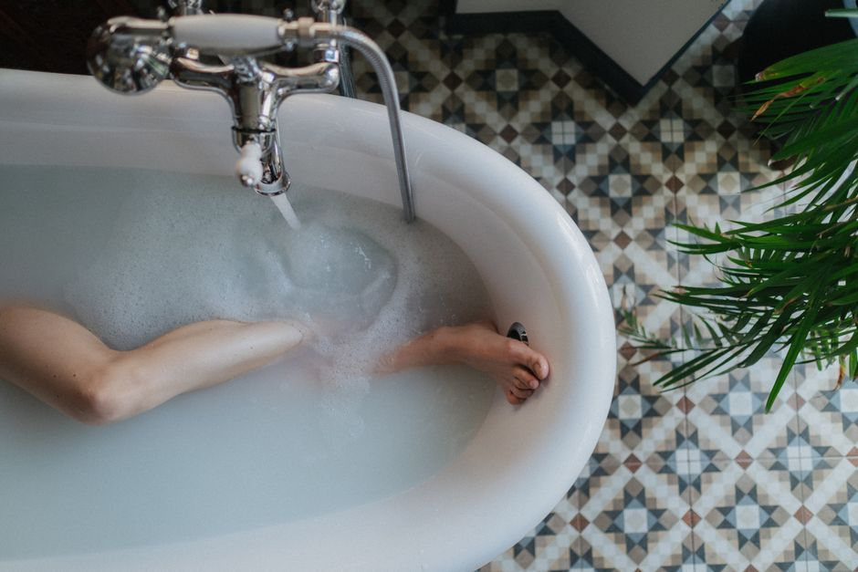

Stress and the Body
Can Stress Cause Psoriasis Flare-Ups? When Your Skin Carries the Load
Stress does not cause psoriasis, but it is one of the most common flare triggers. The National Institutes of Health lists stress alongside infections, medications and certain chemicals as things that can set off symptoms. That is why plaques often seem to thicken, itch or spread during the hardest weeks of your life.
Does stress really trigger psoriasis flares?
If your skin seems to flare the same month everything else falls apart, you are not imagining it. So many women tell me their psoriasis reads like a diary of their hardest seasons.
Psoriasis is a long-term condition where the immune system speeds up skin cell growth, so cells build up into raised, scaly patches. The National Institute of Arthritis and Musculoskeletal and Skin Diseases explains that symptoms tend to come and go, and that they can be triggered by medications, infections, stress or certain chemicals. It also notes that managing common triggers such as stress and skin injuries can help keep symptoms under control.
The Cleveland Clinic names emotional stress among the common flare triggers too. So stress is not the root of psoriasis. It is more like the wind that fans a fire already there.
Why does stress make psoriasis worse?
I think of your skin as the place where your inner world becomes visible. When your nervous system stays on high alert, the skin is often one of the first places to show it.

A few things tend to happen together in a stressful season:
- Your immune system stays on watch. Stress shifts stress hormones and the body's inflammatory signals, and skin that already runs reactive can feel that shift.
- Your sleep gets thinner. Less deep rest means less repair time for the skin.
- You scratch or pick without noticing. Tense hands find rough patches during a long phone call, and skin injury is itself a known trigger.
- Your gentle routines slip. Moisturizing, lukewarm showers and regular meals are often the first things to go when life is full.
This is not punishment. This is physics. A body under pressure spends its resources on getting through the day, and repair work waits.
Can a psoriasis flare make stress worse too?
Yes, and this is the loop so many people feel caught in. A flare can bring itching, discomfort and self-consciousness about how your skin looks. Those feelings raise stress, and stress can feed the next flare.
Here is the line I want you to hold: your skin is not failing you. It is a messenger, telling you how much you have been carrying. Breaking the loop starts with kindness toward the body that is speaking, not frustration with it.
If you also live with eczema or itchy skin, my post on whether stress can cause eczema flare-ups explores that related pattern. For the bigger picture, you might read what your skin may be telling you about stress.
How can you support your skin during a stressful season?
None of these replace the care plan you have with your doctor or dermatologist. They are steady, kind signals that support it:
- Moisturize on a rhythm. A thick, fragrance-free moisturizer right after bathing helps the skin hold water.
- Keep showers short and lukewarm. Hot water and harsh soaps can dry and irritate skin.
- Protect your skin from small injuries. Gentle shaving, soft fabrics and careful nail care all matter.
- Feed your body steadily. Regular, colorful whole-food meals are part of the inflammation picture. My guide to foods that support a calmer inflammatory response is a gentle place to start.
- Give your nervous system an exit. A slow breath in and a longer breath out, a short walk outside, or a few quiet minutes tells your body it can stand down.
- Track your flares. Note sleep, hard days, illnesses, products and new medications so you and your physician can see patterns together.
And if you want to look at inflammation in your body as a whole, my page on inflammation support explains how I walk alongside people looking for root causes.
When should you see a doctor about psoriasis?
Please talk with your physician or a dermatologist if you notice new scaly patches, if a flare is spreading or keeping you awake, or if your usual care is no longer helping. Psoriasis can also affect the joints, so mention any new joint pain, swelling or morning stiffness.
Seek care promptly if a large area of skin becomes very red, painful or peeling, or if you feel unwell with fever or chills. Never stop or change a prescribed medication without talking with the doctor who prescribed it.
Pause for Reflection
Rest one hand gently over your heart and take one slow breath in and a longer breath out.
What has your body been carrying this season that your skin might be speaking for? Where could you trade a little pressure for a little softness this week?
"He healeth the broken in heart, and bindeth up their wounds" (Psalm 147:3, KJV). Tender, flaring skin is not a verdict on you. It is a part of you asking to be held with care.
FAQ
Can stress cause psoriasis?
Stress does not cause psoriasis on its own, but it is a well-known flare trigger. The National Institutes of Health lists stress alongside infections, medications and certain chemicals as things that can set off symptoms. A physician or dermatologist can help you understand your own triggers.
What does a stress psoriasis flare look like?
It usually looks like your typical psoriasis, raised, scaly and sometimes itchy patches, showing up or spreading during demanding seasons. Tracking when flares happen can show whether they follow your stress.
Can calming my stress help my psoriasis?
Calming practices will not replace medical care, but managing triggers such as stress is part of keeping symptoms steadier, according to the National Institutes of Health. Breath, rest and steady routines are gentle places to begin alongside your doctor's plan.
How do I start working with you?
If you would like to talk through whether this is a fit, you can send me a message through my contact page, and we can look at gentle next steps together.
This article is for educational purposes and is not medical advice. It is not intended to diagnose, treat, cure, or prevent any disease. Please work with a qualified practitioner, and consult your physician before making changes to your health routine.
In Renewal,
Lynette Wing
Founder of Renewal Health
Clinical Homeopath, Naturopath, Mind-Body Practitioner
Dedicated to root-cause healing and whole-person alignment. Guiding clients to emerge, align, and live fully, restoring vitality, clarity, and sustainable wellness. About Lynette